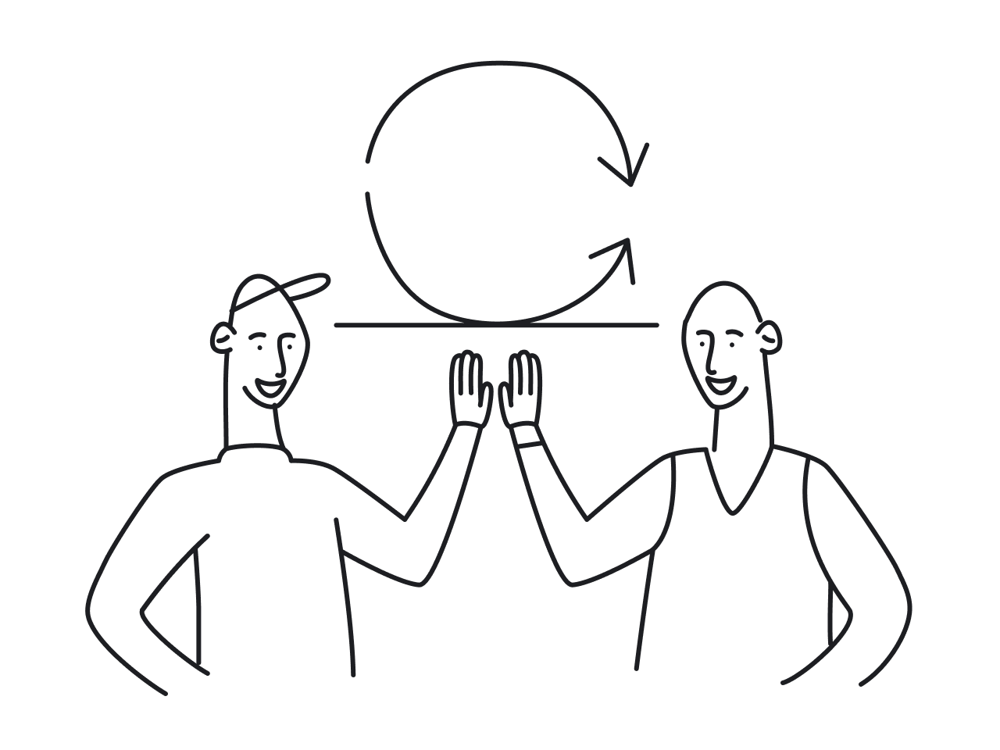
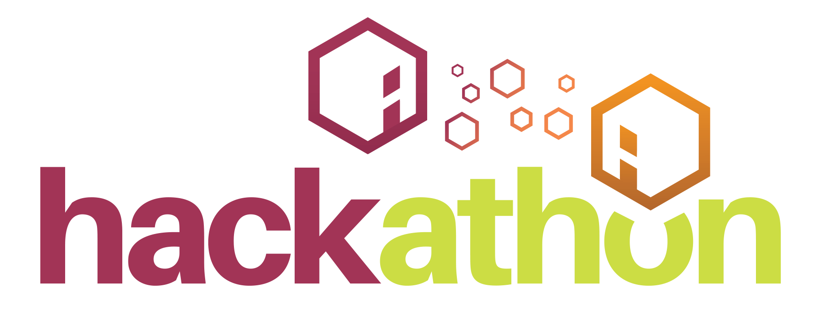

Soccer RefereeI first started refereeing in 2014 when I was 11. I kept going for a long time, and continued to gain more certifications in AYSO. I was faced with challenges and hardships being a youth referee, but I still worked and did games in order to give back to the local soccer community. Overall, I have refereed around 500+ games and hope to get back to it as a hobby soon. | |
Code CoachI worked at theCoderSchool, as a code coach. I worked around 30 hours a week for the whole summer. I liked being able to help kids create video games and designs that they never had the resources to do. I also gained a lot of knowledge on being able to simplify difficult concepts, and be able to explain my designs and code to fellow coaches well. |
 |
Mentor for HowdyHackI was selected as a mentor for HowdyHack, a beginner friendly hackathon. It was a branch of TamuHack, and catered to freshman and sophomore in other majors. I volunteered for about 5 hours and helped people with HTML, CSS, JS, Python, and databasing. Helping people allowed for me to gain experience in simplifiying concepts, and being able to debug code that is new to me. |
 |